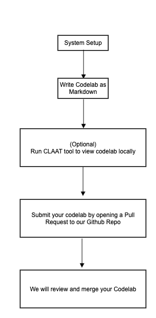

This codelab will show you how to create your own Codelab and contribute to QNX.
We use the open-source Google Codelabs Tools to author codelabs.
Below is the high level workflow on what we will do as part of this codelab 
QNX Customized Claat Tool used in this codelab - Github Repo
Forum for Codelab Authors - Forum Link
View the markdown for this codelab - Markdown File
# Install go globally as environment variable
export PATH=$PATH:/usr/local/go/bin
export GOPATH=$HOME/go
export PATH=$PATH:$GOPATH/bin
git clone https://github.com/qnx/tools.git
cd tools/claat
go install
go version
claat --help
Your system should be ready to get started!
git clone https://github.com/qnx/codelabs.git
git clone git@github.com:qnx/codelabs.git
git checkout -b <name-of-your-codelab>
This section explains how to create a new codelab.
You will only work in the markdown folder under your created codelab repo.
Ensure you do not make any changes to other folders or files to successfully contribute to our codelabs.
Inconsistencies or changes to other files will unfortunately result in a rejected Pull Request.
mkdir -p ./codelabs/markdown/<name-of-your-codelab>
id: name-of-your-codelab
title: template to create codelabs
summary: Learn how to add new Codelabs
categories: codelabs, setup
tags: beginner
difficulty: 1
status: published
authors: Your Team
feedback_link: https://github.com/qnx/codelabs/issues
//cd out from ~./markdown/<name-of-your-codelab> folder to ~./codelabs
claat export -f html -o docs ./markdown/<name-of-your-codelab> folder/<name-of-your-codelab>.md
//cd to ./codelabs/docs/<name-of-your-codelab>
claat serve index.md
//from ~./codelabs/markdown/<name-of-your-codelab> folder
git add .
git commit -m "add comments for your commit"
git push -u origin name-of-your-codelab
Congratulations! We will review and add your Pull Request soon. Thank you for contributing to QNX Codelabs!